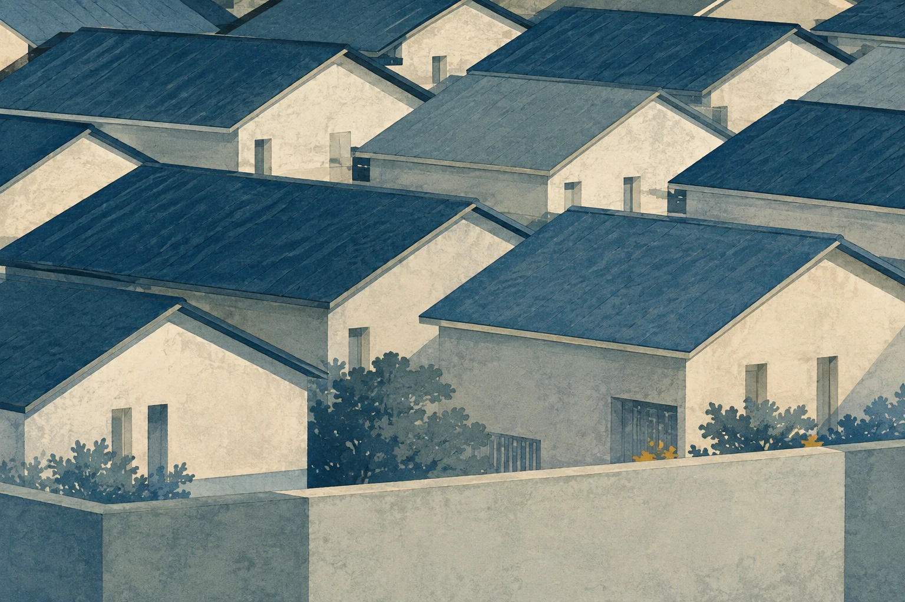
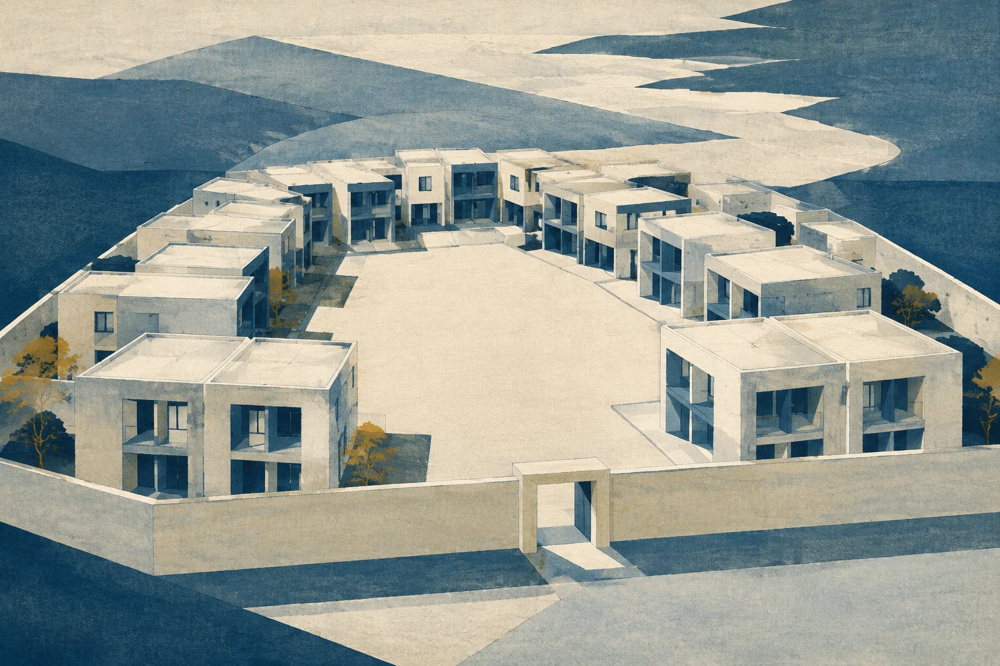

Deslocamentos metropolitanosCrescimento metropolitano (#92); densidade urbana.WebP · 1536 × 1024 · PNG original
Limiares de acessoSensibilidade ao financiamento (#7); acesso à moradia.WebP · 1536 × 1024 · PNG original
Estratos demográficosEnvelhecimento e transição demográfica (#30, #93).WebP · 1536 × 1024 · PNG original
Estúdios na cidadeMoradia individual; estúdios e apartamentos compactos.WebP · 1536 × 1024 · PNG original
Varandas individuaisMoradia individual; vida em edifícios residenciais.WebP · 1536 × 1024 · PNG original
Ritmo de telhadosCondomínios de casas; repetição e conjunto residencial.WebP · 1536 × 1024 · PNG original
Casas e espaços comunsCondomínios horizontais; casas e espaços compartilhados.WebP · 1536 × 1024 · PNG original